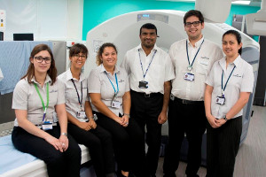

Current Vacancies
We are one of the leading PET centres in the UK with a substantial and expanding track record of clinical and basic research. Key to the operation of the centre is a team of specialist staff covering a wide range of disciplines including radiochemists, radiographers, physicists, computer science, administrative and technical staff.
Please see below for details of our current vacancies.
